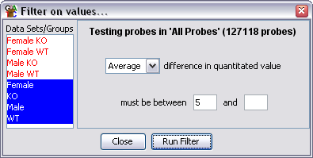

Individual Probe Value Difference Filter
The individual probe value difference filter allows you to filter probes
based on the difference in their currently quantitated values between two
or more DataStores. Each probe is treated individually.

Options
- You need to select two or more DataStores from the list on the left. Data
Sets are shown in red and Data Stores are shown in Blue.
- You can select an upper and a lower limit for the range of differences you want
to include. You only have to specify one of these values. If you leave the lower
value blank then anything under the upper cutoff will pass. If you leave the upper
value blank then anything above the lower cutoff will pass. All differences are
absolute values so you don't need to specify negative values in the filter.
- If you have selected more that two DataStores then all pairwise combinations will
be tested. You need to specify whether the filter range applies to the average,
maximum or minimum difference seen.